1440×900
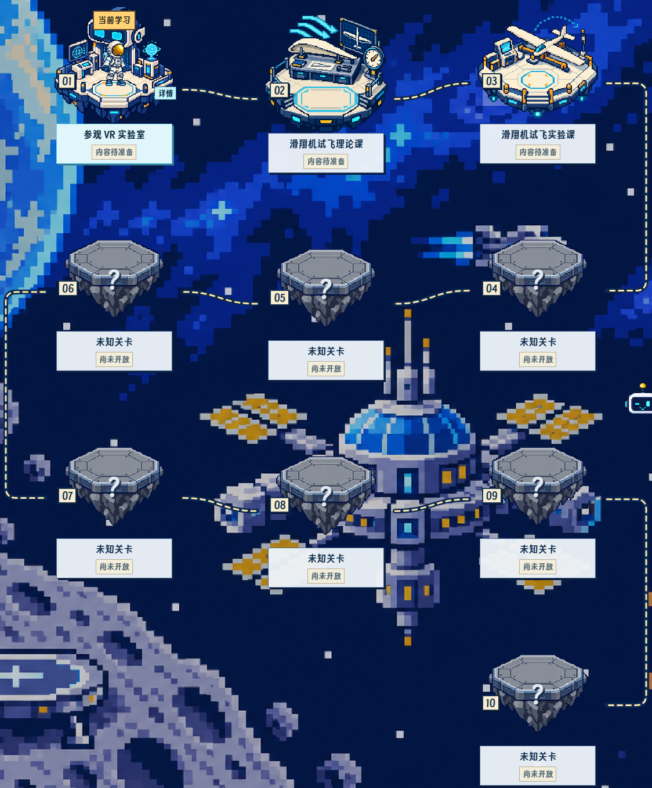
保留基线 8d1d74f，先合并已保存改稿，再完成地图、主题关卡、头像与运势补修。完成后停止等待复核。
下载 HTML/JSON 只保存副本。管理员真实页面顶部「文案审阅」可点固定文字；教学文字仍通过原负责导师维护保存。
内置图像生成，三张独立透明母版 1254×1254；统一方向与配色，派生为 192/384 无损 WebP（最近邻）。网页渲染编号、课名、状态及路线，宇航员独立。没有声称母版经过严格固定调色板逐像素绘制。
vr 透明母版 · 192/384 无损 WebP
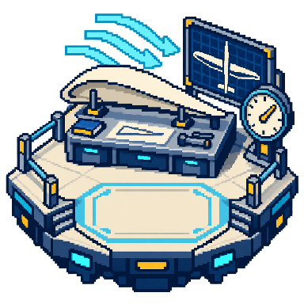
theory 透明母版 · 192/384 无损 WebP
experiment 透明母版 · 192/384 无损 WebP
“前”是用户提供的参考截图副本，未回写原件；“后”由本轮真实 4184 浏览器采集，未替换 API 或教学内容。
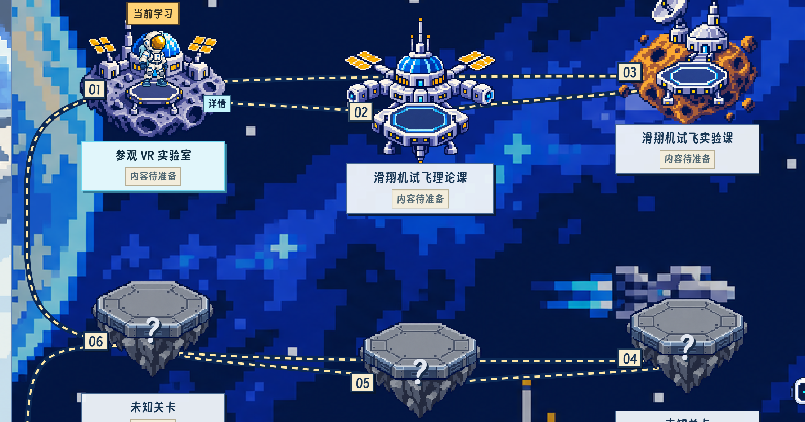
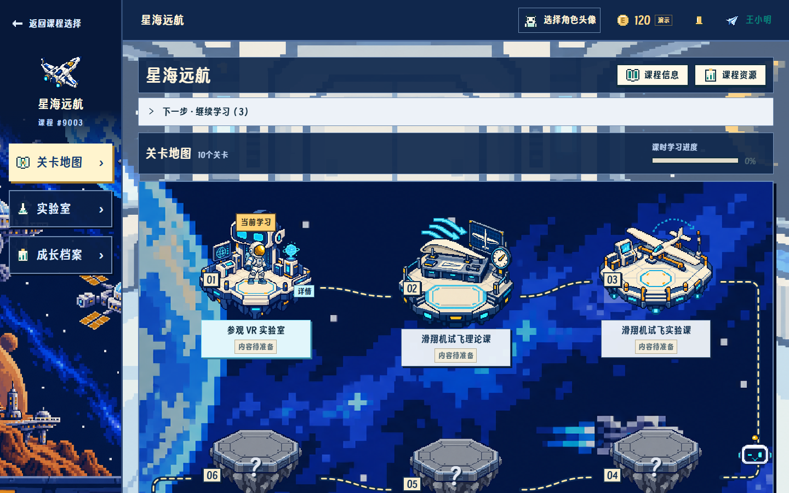
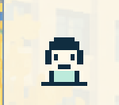
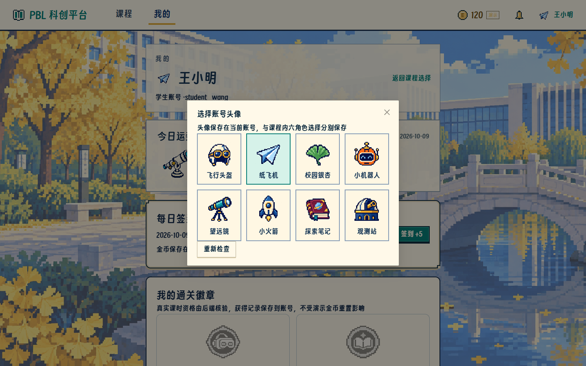
桌面顺序 123 / 654 / 789 / 10；窄屏单列。下面均为 4184 的真实课程和原空教学模板，后七关保持未知。几何采样在隔离浏览器中完成。

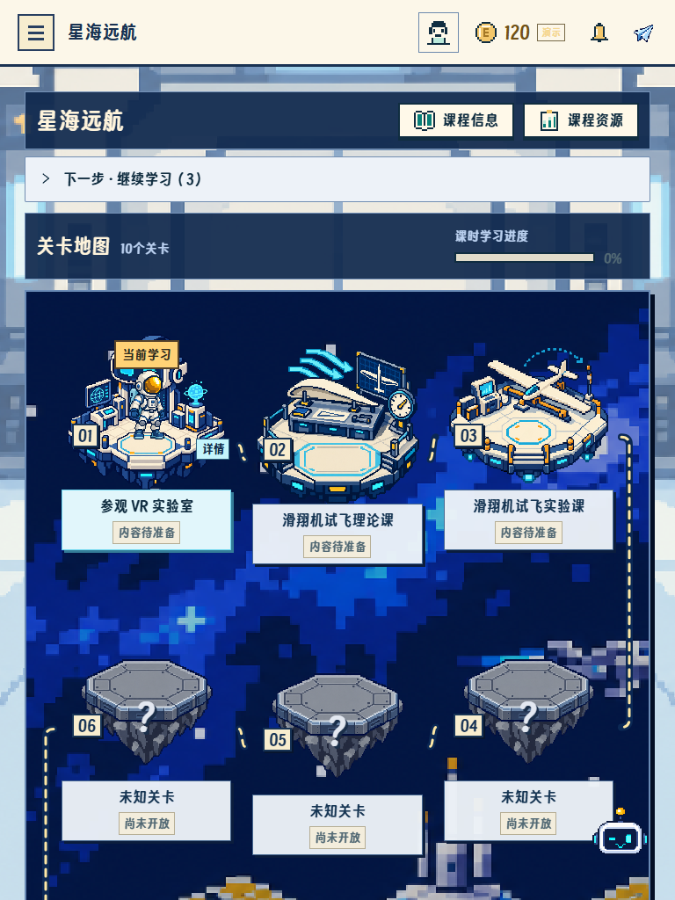
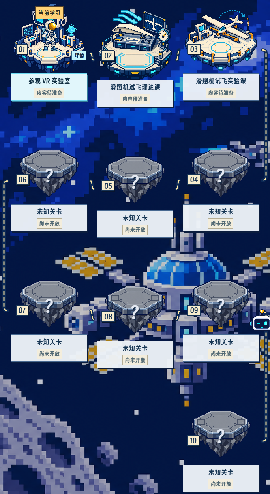
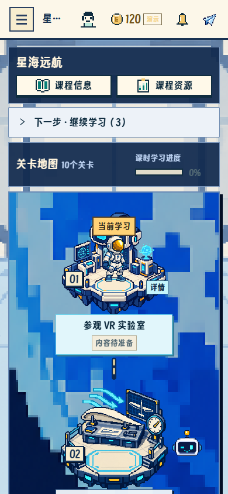
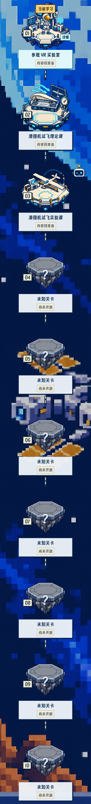
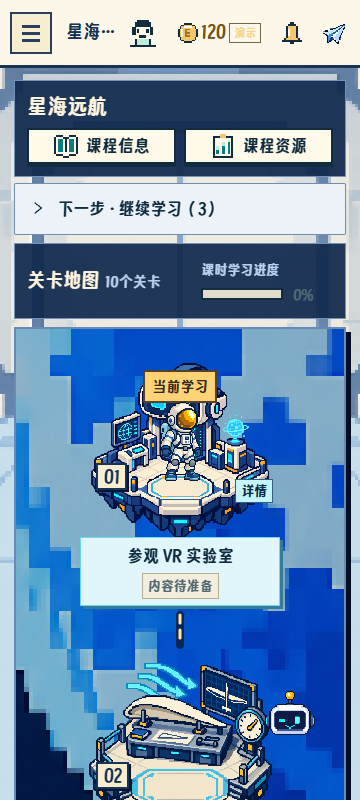
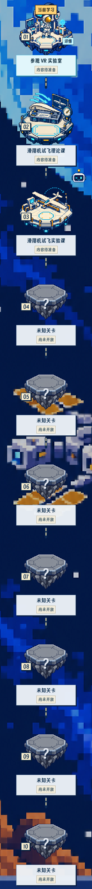
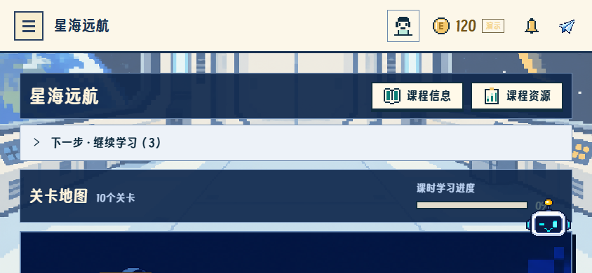
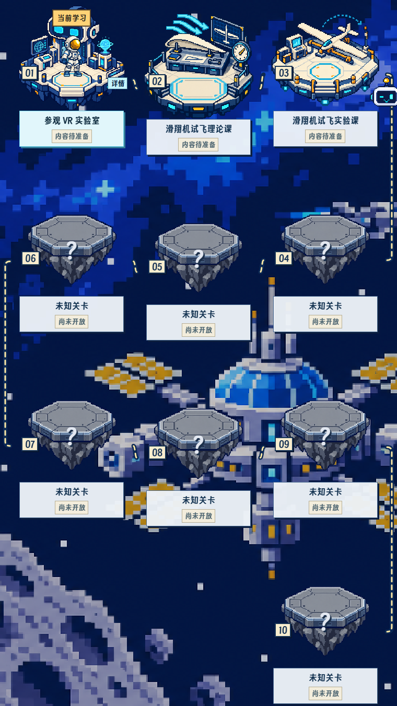
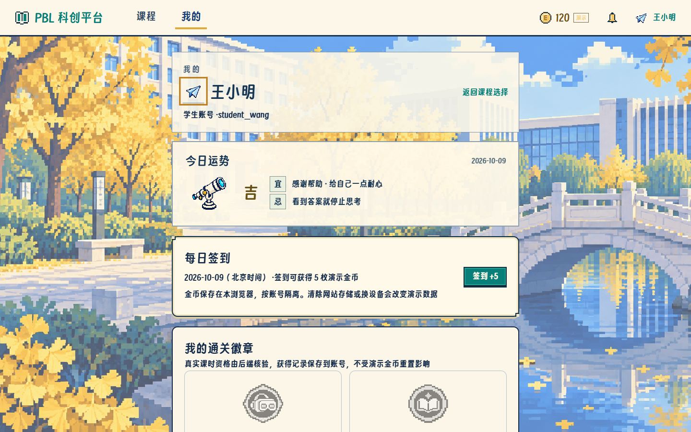
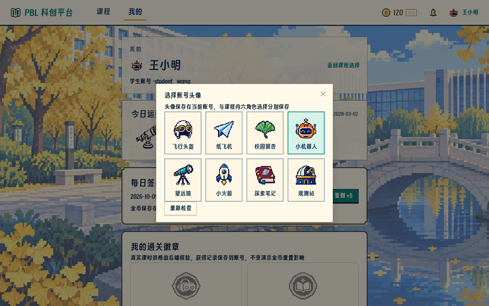
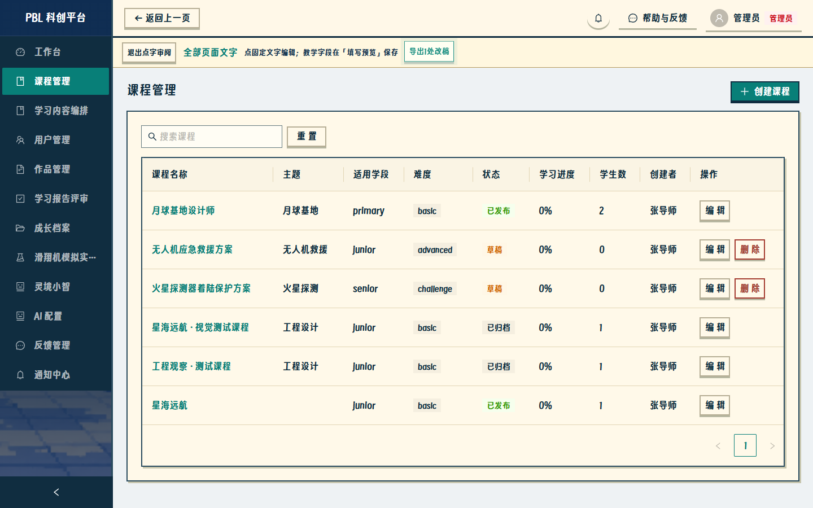
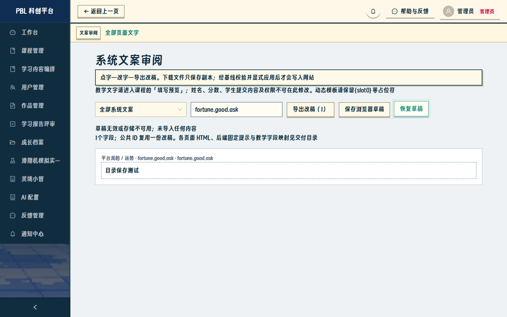
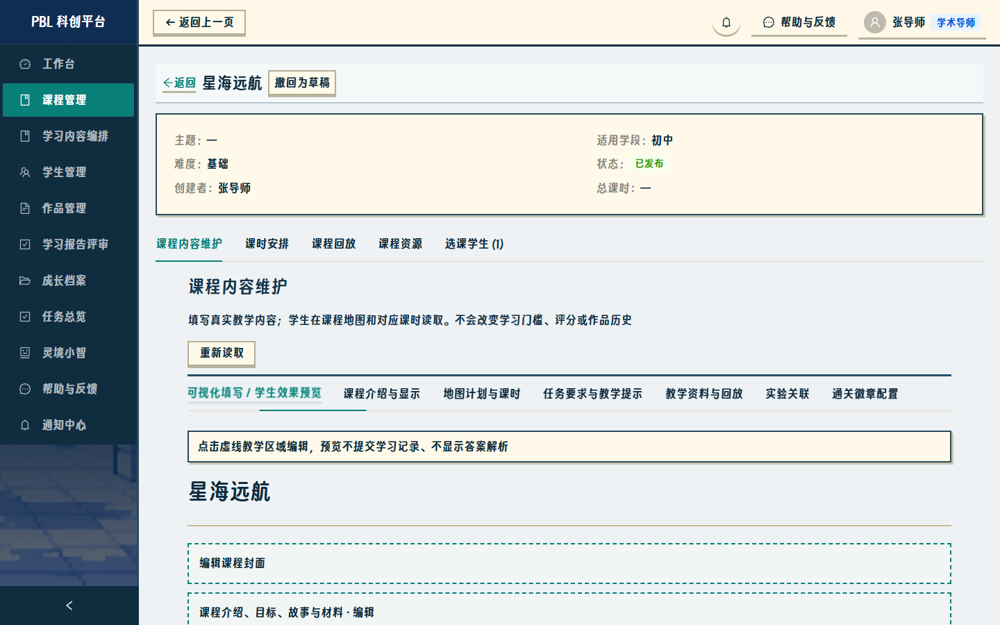
浏览器使用本机 Edge headless。实际教学环境只作正常浏览采集；业务填写、故障、时钟和角色回归使用独立合成数据库。未切公网、未称真机或外部模型已验收。
183处授权改稿与冻结保护 · 49张表/上传/私有配置保护 · 逐页角色路由覆盖 · 后端固定提示只读边界 · 业务协议片段只读边界 · 首次失败/复验记录目录